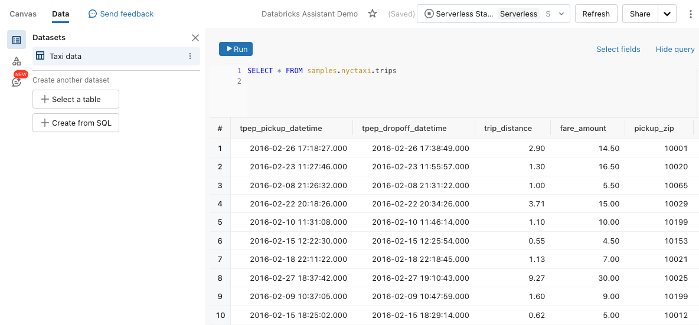

Create visualizations with Databricks Assistant for Lakeview
Preview
This feature is currently in Public Preview. Usage of the feature during the preview is free. Final pricing will be established and communicated prior to general availability (GA).
When drafting a Lakeview dashboard, users can prompt the Databricks Assistant to build charts from any previously defined Lakeview dataset. When you want to create a new chart, you can do so by asking what you want to learn from the data. You can also use the Assistant to edit a chart. After generating a chart, you can interact with and edit the generated visualization using the configuration panel. Users should always review visualizations generated by the Assistant to verify correctness.
How do I use a prompt to generate a visualization?
The following explains how to create visualizations using an existing dashboard where a Lakeview dataset has already been defined. To learn how to create a new Lakeview Dashboard, see Create and share visualizations using Lakeview dashboards.
Click
 Dashboards, then the Lakeview Dashboards tab to view a list of Lakeview Dashboards. Click a dashboard title to start editing.
Dashboards, then the Lakeview Dashboards tab to view a list of Lakeview Dashboards. Click a dashboard title to start editing.Click the Data tab to see what dataset has been defined or used in the dashboard.
To generate charts, at least one dataset must be identified in this section.
If more than one dataset is specified, Databricks Assistant will attempt to find the best dataset to respond to the user’s input.
Create a visualization widget.
Click
 Create a visualization to create a visualization widget and use your mouse to place it in the canvas.
Create a visualization to create a visualization widget and use your mouse to place it in the canvas.
Type a prompt into the visualization widget and press Enter.
The Assistant can take a moment to generate a response. After it generates a chart, you can choose to Accept or Reject it.
If the chart isn’t what you want, retry the input using the Regenerate button.
You can also edit the input and then retry. The updated prompt will modify the previously generated chart.
You can edit the chart using Databricks Assistant or the configuration panel. With your visualization widget selected:
Click the
 Assistant icon. An input prompt appears. Enter a new prompt to your chart.
Assistant icon. An input prompt appears. Enter a new prompt to your chart.Use the configuration panel on the right side of the screen to adjust the existing chart.
Supported capabilities
Databricks Assistant for Lakeview supports simple chart creation.
Number of fields and input
You can compare up to three fields and answer inputs like:
What were the average sales of my product?
What were the average sales of my product per week?
What were the average sales of my product per week by region?
Visualization types
Supported visualization types include bar, line, area, scatter, pie, and counter. For any chart type, the following settings are supported:
Choosing fields for the X, Y, and Color-by encodings.
Choosing an available transformation, like SUM or AVG.
Configuration settings like Sorting, Title, Description, Labels, and choosing specific colors are not supported.
Tips for increasing the accuracy of created visualizations
Be specific. Specify the chart type and necessary fields with as much detail as possible.
Databricks Assistant has access only to table and column metadata and does not have access to row-level data. Thus, it might not create visualizations correctly if a question relies on the specific values in the data.
What is Databricks Assistant?
Databricks Assistant is an AI companion that enables users to be more efficient on the Databricks Platform. Visualization creation with Databricks Assistant is intended to help quickly answer questions about datasets created in Lakeview. Its answers are based on table and column metadata. It declines to answer if it cannot find metadata related to the user question. The AI is new, so mistakes are possible. Use the visualization editor to verify that the appropriate fields have been correctly selected.
Creating visualizations with the Databricks Assistant requires enabling Partner-powered AI assistive features. For details on enabling Databricks Assistant, see Databricks Assistant FAQ. For questions about privacy and security, see Privacy and security.